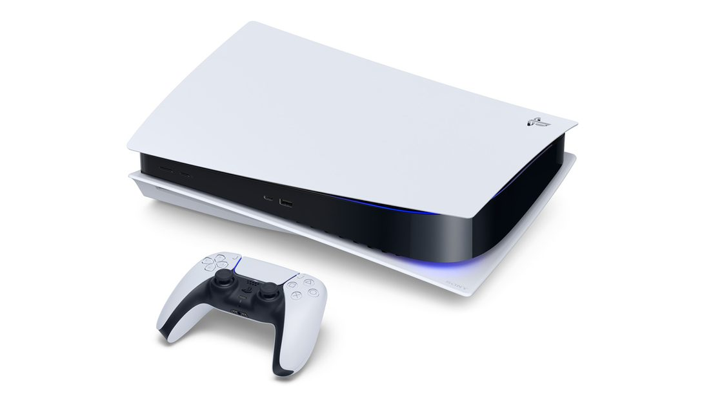
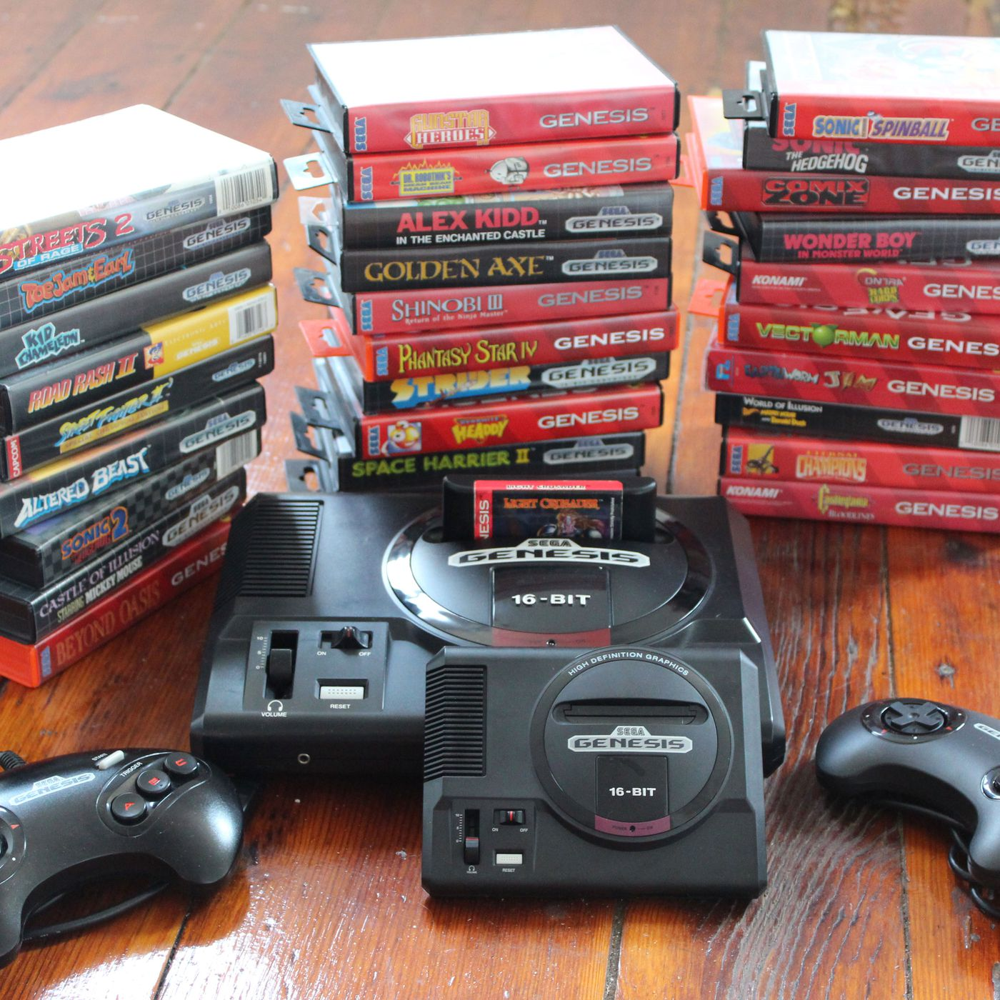
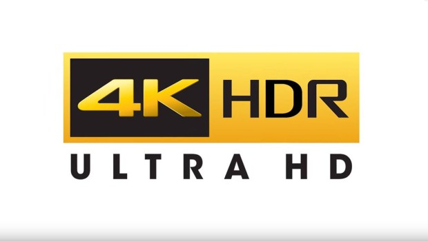

Las Consolas más vendidas de la Historia
Aquí podrás encontrar información sobre las consolas más vendidas a lo largo de la historia.
Es la más reciente iteración de una de las consolas más populares de todos los tiempos y tiene la mejor lista de juegos de lanzamiento a la fecha en comparación con otras consolas.
Para todos.
La PlayStation 5 superó las expectativas de lanzamiento mostrando el potencial que tienen las consolas de nueva generación.
Con velocidades de carga ultrarrápidas, un nuevo control y una línea fenomenal de títulos de lanzamiento (que incluye los favoritos de los fanáticos y nuevos exclusivos), la PS5 es actualmente la mejor plataforma
En primer lugar, la PS5 actualmente lleva la delantera al hablar de juegos. Los jugadores de PS5 han podido disfrutar títulos como Spider-Man: Miles Morales, Demon’s Souls y Godfall desde el primer momento, mientras que los fanáticos de Xbox han estado pidiendo juegos exclusivos como Halo Infinite y The Medium sin respuesta aún, estos se han retrasado hasta mediados del 2021. Sony también ha incorporado la compatibilidad con versiones anteriores de los juegos, además, la PS5 podrá reproducir la mayoría de los juegos de PS4, así que no te perderás títulos de la generación anterior como The Last of Us II y Ghosts of Tsushima. La PS5 tiene la mejor biblioteca de juegos que existe en este momento.
Sin embargo, la sólida lista de juegos de lanzamiento es solo una parte de la ecuación. Ligeramente más grande que el DualShock 4, el nuevo control DualSense refina la retroalimentación háptica, incorporando en la experiencia de juego un sentido preciso del tacto, algo que la retroalimentación de fuerza nunca logró. Si estás agotando tu barra de resistencia al tirar de la cuerda de un arco o intentando derribar una puerta cerrada, por ejemplo, los gatillos del control pueden transmitir esa tensión. La nueva tecnología, combinada con el continuo soporte para PSVR, ofrece una experiencia de juego más inmersiva.
Hablando de periféricos y hardware, ambas iteraciones de la consola usan chips AMD, incluida una CPU de ocho núcleos que se ejecuta en una versión modificada de la línea Ryzen. La GPU de la PS5 también es de AMD y proporciona 10,28 teraflops de potencia, además de soportar procesos que consumen muchos recursos como el trazado de rayos (ray traicing), lo que permite una iluminación más avanzada en los juegos. También viene con un reproductor de Blu-ray 4K, poniéndose en línea con la Xbox One S y la Xbox One X. En términos sencillos, técnicamente la PS5 es menos poderosa que la Xbox Series X, pero aún así tiene un gran impacto y representa una enorme actualización de las consolas de la generación anterior.
Si los discos no son lo tuyo o simplemente quieres ahorrar algo de dinero, no busques más que la edición digital de la PS5. Se vende por $100 dólares menos que la PS5 estándar, pero es idéntica en términos de especificaciones. La única diferencia entre estas es que la edición digital no tiene lector de discos, lo que significa que los Blu-ray Ultra HD están fuera de la ecuación. De esta manera, debes depender solo de las descargas digitales. Todo lo demás, incluyendo los juegos de lanzamiento, sigue siendo lo mismo.

Es la Xbox más poderosa disponible en estos momento, además, su servicio Game Pass es muy atractivo.
Para jugadores que quieran jugar tantos títulos nuevos como sea posible con la mejor fidelidad visual.
La Xbox Series X es la consola más poderosa jamás creada. Ofrece 12 teraflops de potencia, compatibilidad con 4K/120Hz y más.
La Xbox Series X es una central de tecnología. La consola presenta 12 teraflops y hasta ocho veces más de rendimiento gráfico que la Xbox One, sin mencionar que dobla el de la Xbox One X. La Xbox Series X también tiene 16 GB de memoria GDDR6, además, tiene soporte para frecuencia de actualización variable (VRR), sombreado de frecuencia variable (VRS) y un modo de baja latencia que permite mejores respuestas de los juegos. El poder de esta consola de nueva generación seguramente sorprenderá a los jugadores, cuando haya verdaderos juegos de nueva generación disponibles para esta.
No se puede hablar de la Series X sin reconocer el retraso de Halo Infinite. Microsoft fijó el lanzamiento del juego para la Series X hace más de un año, pero el juego no cumplió su fecha límite y no llegará hasta el próximo año, dejando a los fieles fanáticos de la saga abandonados. Claro, Assassin’s Creed Valhalla y NBA 2K21 se ven fenomenales, pero necesitamos algunos exclusivos, ¿cierto? Afortunadamente, lo más probable es que en el futuro habrá una gran cantidad de juegos geniales para la Xbox Series X, incluyendo el tan esperado Halo Infinite, State of Decay 3, una nueva entrega de Fable y muchos otros títulos.
Mientras tanto, los usuarios de Xbox Series X no tienen escasez de juegos para jugar. Esta consola admitirá todas las generaciones anteriores de juegos de Xbox, de forma similar a como lo hizo la Xbox One. Esto significa que podrás jugar títulos selectos de Xbox, Xbox 360, Xbox One y Xbox Series X en esta última, una tremenda victoria para preservar juegos. Xbox también tiene el servicio Game Pass, la mejor oferta en juegos. Con más de 100 títulos de gran impacto en su lista y las promesas de integración de Project XCloud (un servicio de juegos en una nube) los jugadores pueden explorar y probar nuevos títulos por una baja tarifa mensual. La biblioteca tampoco está hecha de títulos desechables de la generación anterior, hay muchos juegos propios nuevos, que seguramente te costarían más si fueras a comprarlos ahora mismo. Dado que Game Pass está disponible en PC también, la Series X entrega más opciones de multiplataforma que Sony.
Si bien la Xbox Series X es una máquina poderosa, también es sorprendentemente silenciosa. La arquitectura de enfriamiento de la consola es increíblemente eficiente, tanto que a veces te preguntarás si la consola está encendida realmente. La Xbox One, en comparación, es bastante ruidosa.

Es la más reciente iteración de una de las consolas más populares de todos los tiempos y tiene la mejor lista de juegos de lanzamiento a la fecha en comparación con otras consolas
¡¡Para todos!!
Nintendo Switch AmazonBasics Bundle With Grip Kit, Stand, and CaseLa Nintendo Switch realmente cierra la brecha entre las consolas domésticas y las computadoras de mano.
Nintendo ha luchado duro por mantenerse al día con Sony y Microsoft durante la última década. A pesar de su popularidad explosiva y dominante, la Wii intercambió potencia gráfica para ganar el truco de control de movimiento, y así sacó a Nintendo de la plataforma de terceros para meterla en una generación completa de hardware. La Wii U intentó cerrar la brecha, pero fracasó por falta de identidad. La última consola de Nintendo,la Switch, cambió finalmente todo eso. Nintendo eludió la carrera armamentista cambiandono el cómotú usas tu consola, sinoeldónde. La Switch es un dispositivo “híbrido” que se puede perfectamente conectar a un televisor, como la PlayStation 4 y la Xbox One, y que también funciona como un dispositivo portátil.
Si bien no tienes el poder computacional para reproducir los últimos lanzamientos de 4K, 60 fps para Xbox One o PS4, la Switch puede reproducirDoom (2016)a 30fps, sin ningún problema y en el lugar que desees, y eso es más que suficiente para muchos jugadores Además detítulos contemporáneos(como el próximoWolfenstein II), la Switch también ha demostrado ser una plataforma fantástica para revivir clásicos modernos, comoSkyrim,L.A. NoireyDark Souls Remastered
Más que una simple plataforma de juegos paratítulos AAAde poca antigüedad, la Switch también ofrece un catálogo en constante crecimiento de fantásticos juegos comoSuper Mario OdysseyyThe Legend of Zelda: Breath of the Wild, así como excelentes indies comoStardew Valley, CelesteyBattle Chef Brigade. Agrega algunos experimentos avanzados con Nintendo Labo, y la Switch se verá como una plataforma increíblemente completa, con algo único para ofrecer a todos.
Nintendo incluso lanzó un kit de realidad virtual creado por Labo, que permite a losjugadores disfrutar del mundo de la realidad virtual. Utiliza la pantalla integrada delSwitch en lugar de un audífono dedicado, lo que lo convierte en uno de los productos más “Nintendo” que hayamos visto en mucho tiempo.
Si planeas usar solo tu Nintendo Switch en modo portátil, puedes elegir unaNintendo Switch Lite. Carece del soporte de acoplamiento del modelo estándar, pero tiene un tamaño más pequeño y una duración de batería ligeramente superior que fue lanzado en 2019. Además, es compatible con casi todos los juegos de Nintendo Switch, y es ideal paraPókemon SwordandShield.
Nintendo Switch también es una gran consola para las personas que poseen una PS4 Pro o Xbox One X. Puede hacer cosas que sus competidores no pueden hacer, además de ofrecer muchos títulos atractivos que nunca aparecerán en una consola de Sony o Microsoft.

Si quieres revivir la edad de oro de los juegos de 16 bits. Sega Genesis Mini es la única competidora real de la Nintendo Classic, con la ventaja de que todavía está en producción.
Para cualquiera que ame los juegos retro.
La nostalgia está en su punto más alto en este momento en la industria de los videojuegos, con muchas compañías que se suben al tren que inició Nintendo. Una de las nuevas incorporaciones es Sega que, después de Nintendo, es la que hace el mejor trabajo, al recrear una consola clásica con algunos de sus mejores juegos.
Mientras que Sony no ha logrado recuperar sus consolas PlayStation más antiguas, la Sega Genesis Mini es una excelente es el único competidor real de la SNES de Nintendo. Pero con la SNES Classic fuera de producción, Genesis Mini es actualmente la mejor manera de experimentar la era dorada de los juegos de 16 bits.
Con un precio de venta competitivo, viene con la versión en miniatura de la consola futurista Genesis, dos controladores con cable y más de 40 juegos. Solo necesitas sacarla de la caja, estás listo para experimentar el modo multijugador local con algunos títulos excelentes como Streets of Rage 2, Street Fighter 2 y más.
El resto de la colección es alucinante, con una gran ayuda de clásicos de Sega incluidos en el paquete. Los títulos más esperados de Sega están disponibles, como Sonic the Hedgehog y Golden Axe, pero hay otras entradas más sorprendentes que merecen su atención, como Castlevania: Bloodlines y Tetris.
Hay algo para todos, desde juegos de rol brillantes como Phantasy Star IV hasta el extremadamente desafiante juego de plataformas Ghouls ‘n Ghosts. Muchos de estos títulos se encuentran entre los mejores juegos de de la historia de la Genesis y puedes tenerlos todos en un paquete ordenado.
Tanto la PS5 como la Xbox Series X admiten juegos de alta resolución que pueden aprovechar los estándares de visualización emergentes, 4K y Alto Rango Dinámico (HDR). Sin embargo, algunas personas no tienen un televisor 4K o soporte para un HDR de calidad, por lo que a veces no es posible aprovechar todo el potencial estas consolas, visualmente hablando.
Si bien hay una pequeña selección de juegos de la generación anterior que aprovecharon al máximo estas características, las consolas nuevas potenciarán estas tecnologías para el futuro, esencialmente, estandarizándolas. Sin embargo, ten en cuenta que ninguna consola requiere que tengas un televisor 4K o HDR para su uso, de manera que puedes comprar una consola nueva y dejar la compra de un televisor más capaz para más adelante, hasta que hayas investigado más y encontrado los juegos que realmente valen la pena jugarlos con una calidad visual increíble.
Si decides comprar un televisor nuevo por el bien de la consola, debes buscar un televisor 4K que funcione a 60 HZ y que sea compatible con HDR 10 en lugar de HDR “Premium”.
